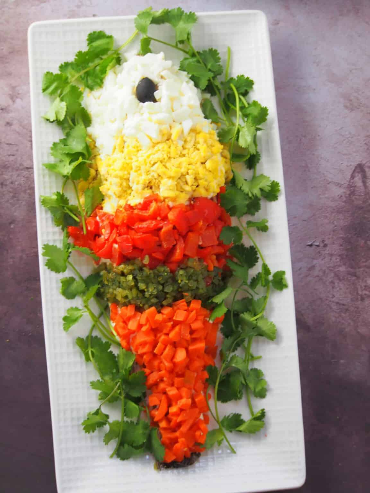

Steamed Lapu-Lapu with Mayonnaise is a traditional Christmas dish made with steamed grouper fish topped with mayonnaise and garnished with chopped eggs, sweet pickle relish, carrots, and bell peppers.

Ingredients
1 large grouper (lapu-lapu), scaled, cleaned, and gutted
2 tablespoons tamarind powder
salt and pepper to taste
1 lemon, cut into wedges
1 bunch green onions, cut into 3-inch lengths
1 large carrot, peeled
1 red bell pepper
4 hardboiled eggs, peeled
1 cup mayonnaise
¼ cup sweet pickle relish
1 black olive, pitted (for the eye)
Instructions
Rinse fish under cold running water, removing all blood and innards. Pat dry.
Rub tamarind powder all over fish, inside and out. Season with salt and pepper to taste. Let stand for about 10 to 15 minutes.
Stuff cavity with lemon wedges and green onions.
Arrange the fish on a large flat steamer rack and steam fish for about 20 to 25 minutes or until it easily flakes with a fork.
While fish is steaming, prepare toppings.
Separate white part of eggs from yolk and finely chop.
Over open gas flames, roast bell pepper until skin is charred. Remove from heat and allow to slightly cool. Under cold running water, peel the skin and discard. Remove stem and seeds and discard. Finely chop the flesh.
In a pot over medium heat, bring lightly salted water to a boil. Add carrot and cook for about 3 to 5 minutes or until tender but crisp. With a slotted spoon, remove from pan and allow to cool. Dice.
Carefully remove fish from steamer and transfer onto a serving platter. Remove lemon and green onions inside fish and discard.
Allow to cool and refrigerate until completely cold.
Spread mayonnaise all over the top of part of fish.
Arrange toppings over mayonnaise as desired. Place a pitted olive on the head of the fish for the "eye".